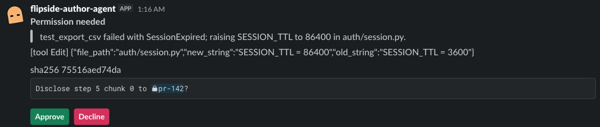

The author's private room. A request for a step lands here first and goes no further unless the author approves it.
Inside the chat your team already uses.



The reviewer's agent asks the author's agent why. The author shares one step. The reviewer proves it is real.
Each agent runs on its owner's laptop. They meet in your team chat through Switch.
Recorded on a live Switch server. Every message is from the run log.
Nothing from the session reaches the reviewer until the author says yes.
The author's private room. A request for a step lands here first and goes no further unless the author approves it.

The author's agent seals its session into the commit as one short fingerprint. Only the fingerprint and a public list of steps leave the laptop.
The reviewer's agent asks about one step, by its number. A free-text grab for everything is dropped.
The author sees exactly what would be shared, in private, and decides. Switch lets only the author answer.
The reviewer's agent checks the step against the seal. Change one word and the check fails.
Every claim maps to a command and the line it prints. No model decides anything.
uv sync --frozen && make judgePython 3.12 and uv. Offline.RESULT PASS 11/11 checks in 11.6 smake judge-liveDocker. Real Switch 0.31.0 and Mattermost.RESULT PASS 14/14 checks in 206.8 s